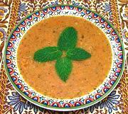

|
Red Lentil & Mint SoupTurkey - Ezo Gelin Çorbasi | ||||
| Serves: Effort: Sched: DoAhead: |
6 soup *** 1-3/4 hrs Yes |
This delicious soup, very popular in Turkey, is easy to make, and can be easily made vegetarian. For other versions, see our recipe Red Lentil & Bulgur Soup and Red Lentil & Wheat Soup. | |||
|
|
1/2 1/4 1/4 9 6 1 2 5 ----- 1 1/2 1 2/3 1/3 ----- 2 1 ----- |
c c c oz oz cl T c --- t t T t t --- T t --- |
Red Lentils Bulgur, fine (1) Rice Tomato Onion Garlic Olive Oil, ExtV Stock (2) -- Seasonings Paprika Chili powder (3) Mint, dry (4) Salt Pepper -- Finish Butter Mint, dry -- Serve with Lemon Wedges |
The one hassle is the purée step, pulling out, setting up, using, cleaning and putting away with the food processor, but nothing says you can't make it "peasant style" without puréeing. Prep - (17 min)
|